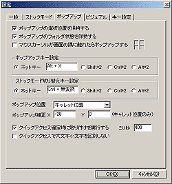

I want to use for the time being -- it seems to be difficult It is OK. Fundamental usage is very easy. First of all, please get used to easy operation, and embezzle Charu3 gradually. I think that the style of text input surely changes.
 How ot Install.
How ot Install.
Charu3 operates on Windows 98, Me and NT 4.0 and 2000, and XP.Keep in mind that it does not operate in Windows 95.
Since an installer is not attached, please copy it to places (C:\Program Files\ etc.) suitable after defrosting the whole folder, and make shortcut to start-up if needed. It is O.K. only now. There is especially no difficult setup.
 How ot Uninstall.
How ot Uninstall.
A registry is not changed. If necessity is lost, please delete the whole folder. Please erase in that case, without also forgetting the made shortcut. Finally uninstallation is now.
The fundamental usage of Charu3 is explained first. An easy setup is explained to be it how to stick a fixed form sentence.

 How to popup method
How to popup method
If a hot key (initial setting is Alt+X) is pushed, pop-up one will appear in a caret position.If ESC is pushed or a hot key is pushed and grazed once again in active ‚ªŠO‚ê‚é, pop-up one will disappear. If a hot key is pushed once again, it will appear again.
 How to paste method.
How to paste method.
A fixed form sentence to stick, when pop-up one is displayed is chosen from a tree. If decided, it will determine by the Enter key. It can determine also in the double click of a mouse. Then, a fixed form sentence is stuck on the position of a caret which suited when it called pop-up one.
 The method of a setup
The method of a setup
Since it corresponds to how to use many, Charu3 can perform a fine setup. It is necessary to understand no setup to ⻠and a part to use ordinarily. since -- I want to explain the meaning of a setup roughlyThe setting dialog is contained in the menu which will appear if the right click of the task tray icon is carried out.The detailed setting method
General
I think that there is no necessity of changing into a part to use ordinarily here."I want to carry out the tool tip of a tray icon to fixation by XP." or MS WORD is used and MS WORD falls.If there is no said problem, it will remain as it is and will be O.K.
Stock mode
Operation in the stock mode which is the feature can be set up also in the function of Charu3. It is not necessary to change into the part which also uses this ordinarily.
Popup
Pop-up operation and a setup of a hot key are carried out. If it changes according to liking, since usage which got used to its hand can be done, please change a hot key depending on the case. Moreover, a setup of a setup which will take out pop-up one if a mouse cursor touches the corner of a desktop, the position from which it takes out pop-up ones can also be performed. A setup of the quick decision into which quick access was developed is also carried out here.
Visual
Here, pop-up appearance can be set up. The kind of font, a size, the icon file used in pop-up one, a setup of a color, and a translucent setup are possible. Please change by liking.
Key setting
I think that it is the portion which a meaning does not understand most in a setup. Although not usually used, when there is no attachment in a skillful stake, the necessity of carrying out this key setup comes out.